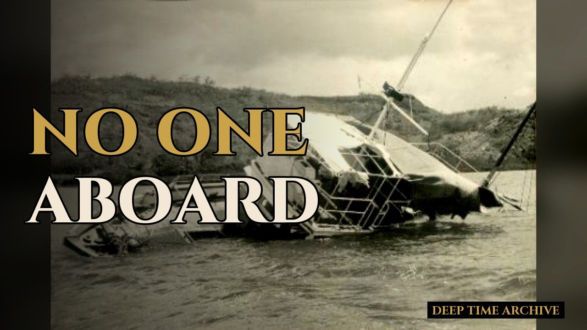

History · Mystery · True crime
True stories history almost forgot
Forgotten kingdoms and trade routes. Ships found drifting with no one aboard. Daring heists, cons and unsolved cases. Stories from Africa and from across the world - researched, sourced, and told with care.

Photo: MV Joyita, 1955 - public domain, via Wikimedia Commons.
Latest story
The Joyita: found adrift with no one aboard
In October 1955 a ship left Apia, in Samoa, with 25 people aboard on a voyage of about two days. Thirty-seven days later she was found drifting near Fiji, still afloat. Not one of the 25 was aboard. An official inquiry called their fate inexplicable.
Watch the storyWhat we cover
Forgotten African history
Kingdoms, rulers, trade routes and turning points that rarely make the textbooks.
True crime & infamous cases
Heists, cons, impostors and unsolved cases - told from the record, with respect for the people involved.
Mysteries
Disappearances and puzzles where the evidence is real and the answer is still missing.
Strange world history
Hoaxes, odd episodes and moments that sound invented - but aren't.
How we work
Every story starts with research. If a detail isn't supported by the sources, it doesn't go in.
- Sources first.
We work from credible sources - scholarship, archives, contemporary reporting and recorded oral history - and list them in every video description.
- Claims are checked one by one.
Each fact is checked against independent sources. Legends are called legends; disputed or uncertain details are described that way.
- True crime with care.
We state guilt only where a court found it, we don't point fingers at people who were never charged, and we remember victims as people, not plot points.
- Open about our tools.
We use AI tools to help draft scripts and to narrate (the voice in our videos is an AI voice). Pictures are real archival photographs and maps, credited on screen and in the description; any AI-generated visual would be labelled as a reconstruction. Every video is reviewed and approved by a person before it is published.
- Corrections are welcome.
If we got something wrong, tell us - we correct the record and say so.
Contact
Corrections, story ideas, licensing or anything else: thedeeptimearchive1@gmail.com